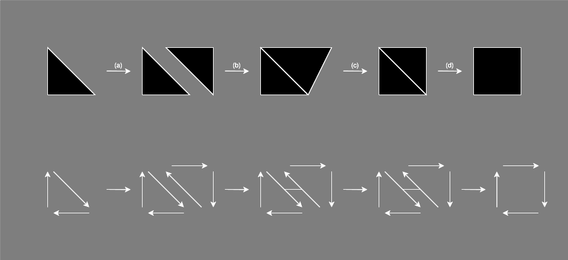
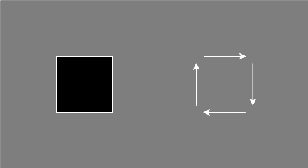
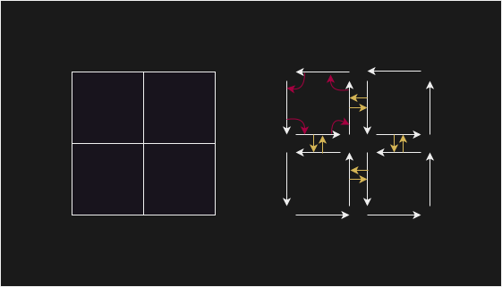
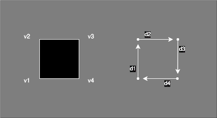
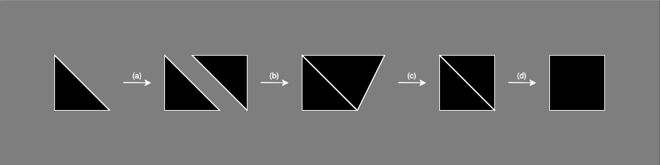

The Honeycomb User Guide
Honeycomb
Honeycomb aims to provide a safe, efficient and scalable implementation of combinatorial maps for meshing applications. More specifically, the goal is to converge towards a (or multiple) structure(s) adapted to algorithms exploiting GPUs and many-core architectures.
The current objective is to write a first implementation in Rust, to then improve the structure without having to deal with data races and similar issues, thanks to the language's guarantees.
Core Requirements
- Rust stable release - Development started on 1.75, but we might use newer features as the project progresses
Quickstart
Rust
The crate is not currently being published on crates.io, meaning you will have to add the dependency manually to your project. This can be done by adding the following line to the manifest of the project:
# Cargo.toml
# ...
[dependencies]
# Other dependencies...
honeycomb-core = { git = "https://github.com/LIHPC-Computational-Geometry/honeycomb.git" }
honeycomb-utils = { git = "https://github.com/LIHPC-Computational-Geometry/honeycomb.git" }
honeycomb-render = { git = "https://github.com/LIHPC-Computational-Geometry/honeycomb.git" }
Documentation
You can generate this documentation locally using mdbook and cargo doc:
# Serve the doc on a local server
mdbook serve --open -d ../target/doc/ honeycomb-guide/ &
cargo doc --all --no-deps
Links
Documentation
- honeycomb-core Core definitions and tools
- honeycomb-render Visualization tool
- honeycomb-utils Utility routines
References
Contributing
License
Workspace
The project root is organized using Cargo workspaces at the moment. This may change when other languages are introduced to the project.
Members
These entries are members of the Cargo workspace.
- honeycomb-core Core definitions and tools for combinatorial map implementation
- honeycomb-render Visualization tool for combinatorial map
- honeycomb-utils Utility routines used in benchmarking and testing
Others
These entries are additional sections that are not linked to the project through Cargo, most likely because they require a different building process.
- honeycomb-guide Source files of the user guide
honeycomb-core
honeycomb-core is a Rust crate that provides basic structures and operations for combinatorial map manipulation. This includes map structures, methods implementation, type aliases and geometric modeling for mesh representation.
Usage
A quickstart example encompassing most features is provided for the following structures:
Content
Structures
- CMap2: 2D combinatorial map implementation
- Coords2: 2D coordinates implementation
- Orbit2: Generic 2D implementation for orbit computation
Aliases
- Vertex2: Coords2 alias
- DartIdentifier: Integer identifier for darts
- VertexIdentifier: Integer identifier for 0D cells
- FaceIdentifier: Integer identifier for 2D cells
- VolumeIdentifier: Integer identifier for 3D cells
Enums
- OrbitPolicy: Orbit parameterization.
- SewPolicy: Logic to follow for the geometrical part of the sewing operation.
- UnsewPolicy: Logic to follow for the geometrical part of the unsewing operation.
Traits
- CoordsFloat: Common trait implemented by types used for coordinate representation.
honeycomb-guide
honeycomb-guide is the mdbook project used to generate the documentation you are currently reading. Its content mainly focuses on definition and feature-listing rather than technical details on implementation. The latter can be found in the code documentation.
Building
You can generate this documentation locally using mdbook and cargo doc:
mdbook serve --open -d ../target/doc/ honeycomb-guide/ &
cargo doc --all --no-deps
Contributing
A few observations on writing documentation using mdbook:
- Note that if you edit the user guide's content, you will have to generate the rust doc again as mdbook remove all files of its target folder at each update.
- When linking to a folder containing an
index.htmlfile, be sure to include the last/in the name of the folder if you don't name the index file directly. Not including that last character seems to break in-file linking of the local version.
honeycomb-render
honeycomb-render is a Rust crate that provides a simple visualization framework to allow the user to render their combinatorial map. It is designed to be used directly in the code by reading data through a reference to the map (as opposed to a binary that would read serialized data).
Usage
Quickstart
Because this crate is meant to be used in tandem with other members of the workspace, no quickstart example is provided in the documentation. Instead, standalone examples provided in the crate cover basic usage and parameterization.
Examples
You can run examples using the following command:
# Run a specific example
cargo run --example <EXAMPLE>
The following examples are available:
| Name | Description |
|---|---|
render_default_no_aa | Render a hardcoded arrow without anti-aliasing |
render_default_smaa1x | Render a hardcoded arrow with anti-aliasing |
render_splitsquaremap | Render a map generated using functions provided by the honeycomb-utils crate |
render_squaremap | Render a map generated using functions provided by the honeycomb-utils crate |
honeycomb-utils
honeycomb-utils is a Rust crate that provides utility functions to the user (and developer) in order to write benchmarks and tests more easily. A number of benchmarks are already defined in this crate using the criterion and iai-callgrind crates. Additionally, one example is provided to illustrate the result of the different size methods on a given map, as well as a plotting script for the methods' output.
Note that the iai-callgrind benchmarks require their runner to be installed as well as Valgrind. Refer to the crate's README for detailed instructions.
Usage
Benchmarks
You can run benchmarks using the following commands:
# Run all benchmarks
cargo bench --benches
# Run a specific benchmark
cargo bench --bench <BENCHMARK>
The following benchmarks are available:
| Name | Type | Source file |
|---|---|---|
splitsquaremap-init | Criterion | benches/splitsquaremap/init.rs |
splitsquaremap-shift | Criterion | benches/splitsquaremap/shift.rs |
squaremap-init | Criterion | benches/squaremap/init.rs |
squaremap-shift | Criterion | benches/squaremap/shift.rs |
squaremap-splitquads | Criterion | benches/squaremap/split.rs |
prof-cmap2-editing | Iai-callgrind | benches/core/cmap2/editing.rs |
prof-cmap2-reading | Iai-callgrind | benches/core/cmap2/reading.rs |
prof-cmap2-sewing-unsewing | Iai-callgrind | benches/core/cmap2/sewing.rs |
A detailed explanation about the purpose of each benchmark is provided at the beginning of their respective source files. As a rule of thumb, the iai-callgrind benchmarks cover individual methods of the structure while criterion benchmarks cover higher level computations.
Examples
You can run examples using the following command:
# Run a specific example
cargo run --example <EXAMPLE>
The following examples are available:
| Name | Description |
|---|---|
memory_usage | Outputs the memory usage of a given map as three csv files. These files can be used to generate charts using the memory_usage.py script |
Scripts
memory_usage.py- requires matplotlib - Plots pie charts using a csv file produced by a size method of CMap2.
Introduction
Scope
Because our implementation has very practical goals, the definitions presented here use a more intuitive approach rather than strict mathematical concepts.
Our main interest at the moment being 2D and 3D combinatorial maps, some operations are defined with consideration to these restrictions. This is especially useful for orbits and sewing operations.
Combinatorial Maps
N-dimensional combinatorial maps, noted N-map, are objects made up of two main elements:
- A set of darts, darts being the smallest elements making up the map
- N beta functions, linking the darts of the map
Additionally, we can define embedded data as spatial anchoring of the darts making up the map. While the first two elements hold topological information, embedded data gives information about the "shape" of the map (e.g. vertices position in a spatial domain).
With these elements, we can represent and operate on meshes.
Example
Operations on a combinatorial map can affect its topology, shape or both:

The specifics on how data is encoded is detailed in attribute-specific sections.
Darts
Darts are the finest grain composing combinatorial maps. The structure of the map is given by the relationship between darts, defined through beta functions.

In our implementation, darts exist implicitly through indexing and their associated data. There are no dart objects in a strict sense, there is only a given number of dart, their associated data ordered by an array-like logic, and a record of "unused" slots that can be used for dart insertion. Because of this, we assimilate dart and dart index.
Beta Functions
Each combinatorial map of dimension N defines N beta functions linking the set of darts together (e.g. a 2-map contains β1 and β2). These functions model the topology of the map, giving information about connections of the different cells of the map / mesh. In our case, we mostly use:
- β1, a (partial) permutation,
- β2, β3, two (partial) involutions

Additionally, we define β0 as the inverse of β1, i.e. β0(β1(d)) = d. This comes from a practical consideration for performances and efficiency of the implementation.
The βi functions can be interpreted as navigation functions along the i-th dimensions: β1 makes you navigate along the edges, β2 along the faces, etc. This can be generalized to N dimensions, but we are only interested in 2D and 3D at the moment.
Orbits
We define orbits as a set of darts that are accessible from a given dart, using a certain set of beta functions. For example:
- ⟨β1⟩(d) refers to all darts accessible from d using β1 recursively any number of times.
- ⟨β1, β3⟩(d) refers to all darts accessible from d using any combination of β1 and β3.
i-cells
A specific subset of orbits, referred to as i-cells are defined and often used in algorithms. The general definition is the following:
- if i = 0: 0-cell(d) = ⟨{ βj o βk with 1 ≤ j < k ≤ N }⟩(d)
- else: i-cell(d) = ⟨β1, β2, ..., βi-1, βi+1, ..., βN⟩(d)
In our case, we can use specialized definitions for our dimensions:
| i | Geometry | 2-map | 3-map |
|---|---|---|---|
| 0 | Vertex | ⟨β1 o β2⟩(d) or ⟨β2 o β-1⟩(d) | ⟨β3 o β2, β1 o β3⟩(d) or ⟨β3 o β2, β3 o β-1⟩(d) |
| 1 | Edge | ⟨β2⟩(d) | ⟨β2, β3⟩(d) |
| 2 | Face | ⟨β1⟩(d) | ⟨β1, β3⟩(d) |
| 3 | Volume | - | ⟨β1, β2⟩(d) |
Embedding
Embedding, or embedded data refers to the association of topological entities (darts, i-cells) to geometrical data (spatial positions, vertices, faces, volumes).
We choose to encode the origin of darts as their associated vertex. In order to avoid duplicating coordinates, what is associated to each dart is an identifier, meaning that all darts starting from a given point in space share the same associated vertex ID.

In the above example, the data would be organized in the following way:
- darts = { null, d1, d2, d3, d4 }
- associated_vertex = { null, v1, v2, v3, v4 }
- vertices = { (0.0, 0.0), (0.0, 1.0), (1.0, 1.0), (1.0, 0.0) }
In this case, v1 = 0; v2 = 1; v3 = 2; v4 = 3.
Association of darts and vertices ID is done implicitly through indexing; In practice, the darts vector does not even exist. This example is limited to vertices, but we also keep track of faces, and volumes eventually.
The embedding of geometrical data also has implication for operations on the map. This is detailed along operation specificities in their dedicated sections.
Basic Operations
Add / Remove a dimension
Add / Remove a free dart
Sewing operation
Unsewing operation
Advanced Operations
Generic orbit
I-cells
Orientation
CMap2
Usage
A general example is provided in the Rust doc of the CMap2 structure. From a meshing perspective, it corresponds to the following operations:

After the creation of an initial map modeling a simple triangle, we:
- (a) add & initialize new darts to the map to model a second triangle.
- (b) 2-sew the two triangles using according to a StretchLeft sewing policy.
- (c) move the most upper right vertex to form a square using both triangles.
- (d) 2-unsew the inner edge, free and remove its darts to form an actual square.
Most of those steps require multiple method calls and assertions are used to highlight the modification done to the structure along the way.